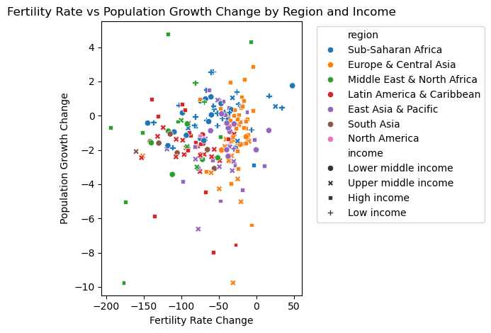
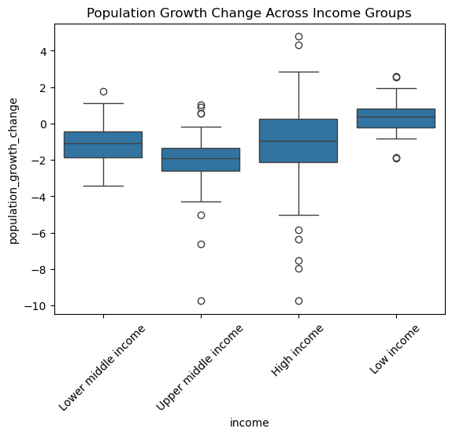
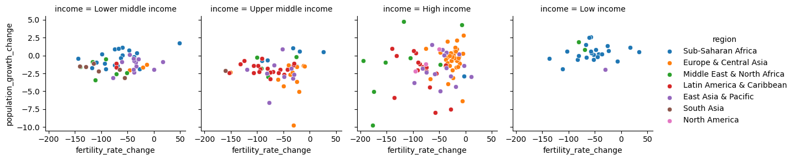
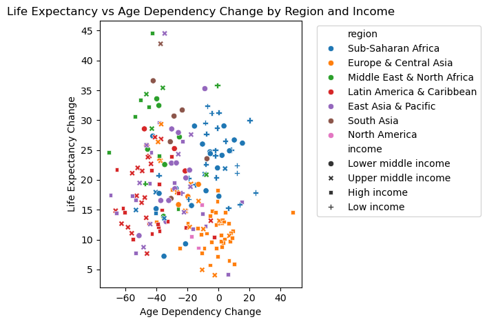
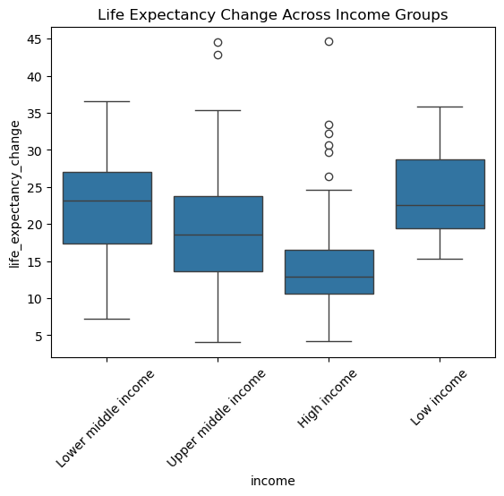
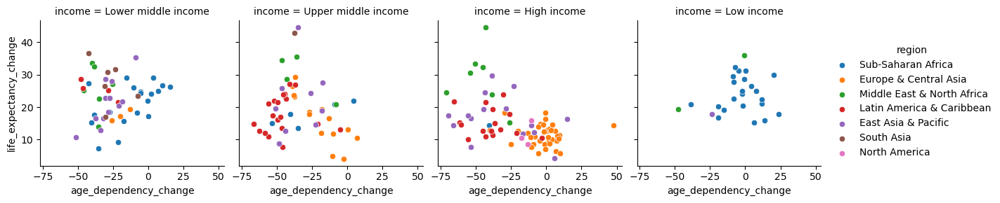
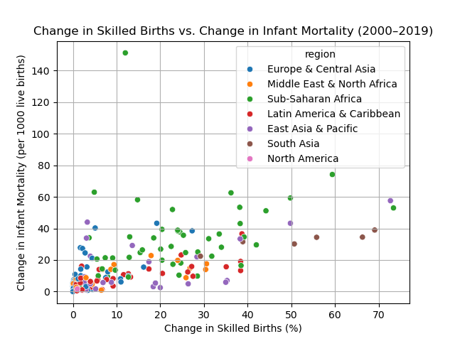
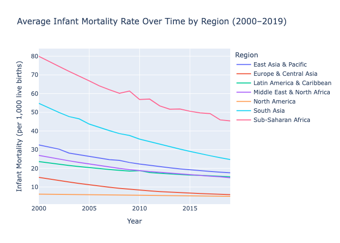
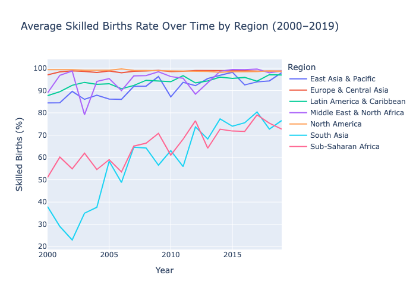

A Comprehensive Analysis of Worldwide Population Dynamic Trends
Introduction
In this project, we examine the relationships between key indicators of public health and population dynamics across countries using data from the World Bank’s World Development Indicators (WDI) database. Our goal is to understand how certain demographic, health, and fertility-related measures are related, and what patterns emerge across different regions or income levels over time.
Data Description
To guide our analysis, we grouped six indicators into three pairs:
- Adolescent fertility rate (births per 1,000 women ages 15–19) and population growth (annual %) to explore how youth fertility might contribute to overall population change.
- Adolescent fertility rate serves as an indicator of reproductive health and education access.
- Population growth reflects demographic shifts and may be influenced by fertility trends.
- Age dependency ratio (% of working-age population) and life expectancy at birth (years) to understand how population age structure relates to general health and longevity.
- Age dependency ratio measures the economic burden on the working population.
- Life expectancy is a common proxy for overall population health.
- Births attended by skilled health staff (% of total) and infant mortality rate (per 1,000 live births) to assess how healthcare access during childbirth impacts early-life survival.
- Skilled birth attendance indicates healthcare quality and accessibility during delivery.
- Infant mortality rate reflects child health outcomes and overall healthcare effectiveness.
By integrating SQL for data cleaning and transformation and Python for visualization and modeling, we aim to show meaningful patterns and trends within these pairs. Our analysis also considers regional and income-level differences where relevant. Through this approach, we hope to provide insights into how social and healthcare factors contribute to broader population and health outcomes worldwide.
Data Analysis, Results, and Discussion
Pair 1: Adolescent Fertility Rate (births per 1000 women ages 15-19) and Population Growth (annual %)

We first plotted the change for all countries across all region and income statuses for adolescent fertility rate and population from 1960-2023, with each point representing a country to provide a broad visualization and assess any overall trends.
At the global level, both adolescent fertility rate and population growth have been declining from 1960-2023. The regions of Europe & Central Asia as well as East Asia & Pacific, primarily made up of HICs and LMICs, have experienced the smallest declines in adolescent fertility rate from. Otherwise, the rest of the regions and economic statuses emcompass a relatively wide range of changes, albeit negative, in both metrics.

To investigate trends population growth, we plotted a distribution of change in population growth rates according to countries’ income level, independent of region1.
On average, low income countries have the experienced the highest change population growth rates, and is the only income group that experienced a positive change in population growth rates. High, upper middle, and lower middle income countries all experienced negative changes in population growth rates from 1961-2023, with upper middle income countries on average having the greatest decline in population growth.

All income groups seem to have a similar spread of change in adolescent fertility rate with most countries experiencing a decline in fertility rate since 1960, though several high income countries from the MENA region seem have experienced exceptionally large drops. Otherwise, the overall trends exhibited low income countries are relatively similar that of lower-middle income countries, though low-middle income countries on average have experienced a slight decrease in their population growth rates as well as adolescent fertility rates.
A systematic analysis for the Global Burden of Disease Study in 2017 on near-global population and fertility patterns discovered that fertility rates for ages 15-19 tend to decrease as countries develop, though countries with similar socio-demographic index scores also exhibited drastically different adolescent fertility rates (Murray et al. 2018). Using income status as an rough indicator of development and assuming that countries have undergone development from the 1960s to 2023, it would be plausible for low income and low-middle income countries to exhibit the most significant decreases in adolescent fertility rate. This trend seems to be largely supported by our data, where high income countries have experienced a smaller decrease on average in terms of adolescent fertility rates relative to both low income and low-middle income countries, which have more significant decreases. At the same time, due to demographic transition, low income countries have experienced the largest increase in ppopulation growth rates. High income countries also have the second highest change in population growth (albeit still negative), which is not necessarily attributed to high adolescent fertility rates. As adolescent births are just a facet of a country’s overall population growth, high income countries’ increase in population growth rates can likely be attributed to not only births by older adults, but also to other phenomena such as the arrival of migrants countries belonging to different income statuses.
Pair 2: Age dependency ratio (% of working-age population) and life expectancy at birth, total (years)

We plotted the change in life expectancy and age dependency ratio for all countries across all regions and income levels together to provide an aggregate visualization.
The countries belonging the regions of Sub-Saharan Africa and Europe & Central Asia share the most similarities with other countries within their own regions. Both these regions have experienced a relatively small change in age dependency, while most other regions seem to have undergone a more significant decrease in age dependency. Globally, all countries experienced an increase in life expectancy, with Europe & Central Asia in particular having experienced the smallest change.

To investigate trends in life expectancy, we plotted changes in life expectancy with respect to different levels of income.
High income countries experienced relatively small increase in life expectancy on average while lower-middle income countries experienced the most significant increase in life expectancy. Low income countries experienced an increase just slightly shy of that of lower-middle income countries and ahve the narrowest distribution of change. However, high income and upper-middle income countries had the widest range in life expectancy changes—they include countries that experienced the greatest increases of 40 years, and some as low as under 5 years.

High income countries of Europe & Central Asia are clustered near one another in both age dependency and life expectancy change, and upper-middle income countries of the same region also have similar change in age dependency. Countries in the Latin America & Caribbean region also have a relatively substantial decrease in age dependency, most prominent in the region’s upper middle income countries. Low income countries, however, seem to have experienced the smallest decrease in age dependency.
In the future, increases in age dependency ratios are predicted to occur in regions with generally increasing populations such as the regions of Sub-Saharan Africa, Middle East, Asia, and Latin America, while established market economies such as those in Europe and Japan will experience increasing age dependency ratios (Harwood, Sayer, and Hirschfeld 2004). These trends of age dependency are not necessarily reflected in our data, as countries in the Middle East, Latin America, and Asia are shown to have experienced decreasing age dependency ratios while Sub-Saharan African countries have less of a pronounced change in age dependency ratios. Additionally, within the early stages of demographic transition, life expectancies tend to increase and begin to stagnate in later stages, which is reflected by high income countries having relatively small increases in life expectancy. As part of demographic transition, age of entry into the workforce is also pushed back, while elderly populations can still remain active within the workforce with higher ages of retirement (Pablos-Mendez et al. 2015). Paired with this fact, countries that are in the intermediate stages of demographic transition are likely to experience decreasing age dependency ratios as the population pyramid narrows and the proportion of the youth population decreases, drastically decreasing the amount of youth dependents while at the same time, elderly populations are also more likely to work and contribute to the workforce. This trend is also reflected in our data, where upper-middle and lower-middle income countries have experienced more significant decreases on average as they have undergone further transition into more developed economies.
Pair 3: Births attended by skilled health staff (% of total) and infant mortality rate (per 1,000 live births)

To explore the relationship between maternal healthcare access and infant survival outcomes, we plotted the change in births attended by skilled health staff against the change in infant mortality rates between 2000 and 2019.
Each point in the scatterplot represents a region, color-coded.
We used the following metrics:
- X-axis: Change in the percentage of births attended by skilled health staff (%)
- Y-axis: Change in infant mortality (per 1,000 live births)
This visual helps assess whether increases in skilled birth attendance are associated with better infant health outcomes, and whether this trend is consistent across regions.
Many countries that experienced an increase in skilled birth attendance from 2000 to 2019 also saw a decrease in infant mortality (or greater change in infant mortality), especially in Sub-Saharan Africa, South Asia, and East Asia & Pacific. This suggests a negative correlation: as more births are attended by skilled health staff, fewer infants die.

To understand trends in infant survival across global regions, we plotted average infant mortality rates from 2000 to 2019.
Each line represents a different world region, showing changes in infant deaths per 1,000 live births over time.
Key insights from this visualization include:
- All regions experienced a decline in infant mortality rates over the 20-year period.
- Sub-Saharan Africa had the highest rates throughout, though it also saw significant improvement—from around 80 deaths per 1,000 live births in 2000 to below 50 by 2019.
- South Asia also made significant progress closing the gap with regions that have lower infant mortality rates.
- Regions like Europe & Central Asia and North America maintained the lowest infant mortality rates, with steady improvements, though the overall changes were smaller.
These patterns reflect global progress in child health and survival, while highlighting persistent disparities across regions. The overall downward trend is consistent with increased access to healthcare and maternal services observed during this time.

To track improvements in maternal healthcare access globally, we visualized the average percentage of births attended by skilled health staff across world regions from 2000 to 2019.
Each line represents a region, illustrating how skilled birth attendance has evolved over time.
Key insights from the figure include:
- Regions like Europe & Central Asia and North America consistently maintained near-universal skilled birth attendance, with rates close to 100% .
- East Asia & Pacific, Latin America & Caribbean, and Middle East & North Africa also exhibited high and relatively stable skilled birth rates, typically above 90%.
- Sub-Saharan Africa and South Asia, which started with the lowest skilled birth attendance rates in 2000, showed substantial improvement over the two decades. South Asia, in particular, saw an increase from around 35% to over 70%.
The upward trends in these regions reflect significant investments in maternal health services and broader healthcare access.
This visualization highlights regional disparities in maternal healthcare but also showcases meaningful global progress, particularly in regions with historically lower access to skilled care during childbirth.
Conclusion and Further Reading
This project investigates the relationships between public health and population dynamics using World Bank data to reveal patterns across regions and income levels. Focusing on three indicator pairs, we analyze how demographic and health factors interact, including adolescent fertility rate and population growth, age dependency ratio and life expectancy at birth, and births attended by skilled health staff and infant mortality rates.
Both pairs 1 and 2 supported trends across countries of different income groups, attributed to phenomena associated with demographic transition. Low income countries have experienced the greatest decreases in adolescent fertility rates but also the largest increase in population growth rates. This highlights the fact that fertility rates in not adolescents, but older population as well as a country’s overall improvements in areas such as access to food, healthcare, sanitation, and economic development. Likewise, the more pronounced decreases in dependency ratios lower-middle and upper-middle income countries as they transition to highly developed economies reflect a shift in the demographics working class to older groups, as well as also having a more pronounced increase in life expectancy as opposed to highly developed countries, where life expectancy is already approaching its human limits. These indicators and their trajectories aren’t necessarily the sole cause of one another, but are intertwined with and influence one another and change accordingly with a country’s point along demographic transition into highly developed economies.
For pair 3, the analysis shows that increased skilled birth attendance is strongly associated with declines in infant mortality globally, with significant progress in regions like Sub-Saharan Africa and South Asia despite ongoing disparities. A systematic review of 41 African countries demonstrated that a 10% increase in skilled birth attendance corresponded with a 6% reduction in neonatal mortality, highlighting the critical impact of skilled healthcare during childbirth on infant survival (Berhan and Berhan 2014). Similarly, a national survey in Lesotho found that births not attended by skilled health personnel had twice the risk of neonatal death compared to those with skilled attendants, directly supporting the finding that increased skilled birth attendance is linked to lower infant mortality rates (Baruwa, Amoateng, and Mkwananzi 2021).
References
Footnotes
Data for population growth in 1960 was not available, so change in population growth rate was represented by 2023 annual rate subtracted by the 1961 annual rate.↩︎